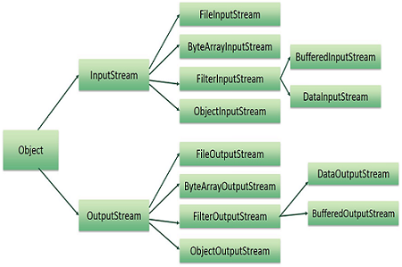

Java Streams Files and I/O
The java.io package contains nearly
every class you might ever need to perform input and output (I/O) in Java. All
these streams represent an input source and an output destination. The stream
in the java.io package supports many data such as primitives, Object, localized
characters, etc.
A stream can be defined as a
sequence of data. The InputStream is used to read
data from a source and the OutputStream is used for
writing data to a destination.
Java provides strong but flexible
support for I/O related to Files and networks but this tutorial covers very
basic functionality related to streams and I/O. We would see most commonly used
example one by one:
Byte Streams
Java byte streams are used to
perform input and output of 8-bit bytes. Though there are many classes related
to byte streams but the most frequently used classes are ,
FileInputStream and FileOutputStream.
Following is an example which makes use of these two classes to copy an input
file into an output file:
import java.io.*; public class CopyFile { public static void main(String args[]) throws IOException { FileInputStream in = null; FileOutputStream out = null; try { in = new FileInputStream("input.txt"); out = new FileOutputStream("output.txt"); int c; while ((c = in.read()) != -1) { out.write(c); } }finally { if (in != null) { in.close(); } if (out != null) { out.close(); } } } }
Now let's have a file input.txt
with the following content:
This is test for copy file.
As a next step, compile above
program and execute it, which will result in creating output.txt file with the
same content as we have in input.txt. So let's put above code in CopyFile.java
file and do the following:
$javac CopyFile.java
$java CopyFile
Character Streams
Java Byte streams are used to
perform input and output of 8-bit bytes, where as
Java Character streams are used to perform input and output for 16-bit unicode. Though there are many classes related to character
streams but the most frequently used classes are , FileReader and FileWriter..
Though internally FileReader uses FileInputStream
and FileWriter uses FileOutputStream
but here major difference is that FileReader reads
two bytes at a time and FileWriter writes two bytes
at a time.
We can re-write above example which
makes use of these two classes to copy an input file (having unicode characters) into an output file:
import java.io.*; public class CopyFile { public static void main(String args[]) throws IOException { FileReader in = null; FileWriter out = null; try { in = new FileReader("input.txt"); out = new FileWriter("output.txt"); int c; while ((c = in.read()) != -1) { out.write(c); } }finally { if (in != null) { in.close(); } if (out != null) { out.close(); } } } }
Now let's have a file input.txt
with the following content:
This is test for copy file.
As a next step, compile above
program and execute it, which will result in creating output.txt file with the
same content as we have in input.txt. So let's put above code in CopyFile.java
file and do the following:
$javac CopyFile.java
$java CopyFile
Standard Streams
All the programming languages
provide support for standard I/O where user's program can take input from a
keyboard and then produce output on the computer screen. If you are aware if C
or C++ programming languages, then you must be aware of three standard devices
STDIN, STDOUT and STDERR. Similar way Java provides following three standard
streams
Following is a simple program which
creates InputStreamReader to read standard
input stream until the user types a "q":
import java.io.*; public class ReadConsole { public static void main(String args[]) throws IOException { InputStreamReader cin = null; try { cin = new InputStreamReader(System.in); System.out.println("Enter characters, 'q' to quit."); char c; do { c = (char) cin.read(); System.out.print(c); } while(c != 'q'); }finally { if (cin != null) { cin.close(); } } } }
Let's keep above code in
ReadConsole.java file and try to compile and execute it as below. This program
continues reading and outputting same character until we press 'q':
$javac ReadConsole.java
$java ReadConsole
Enter characters, 'q' to quit.
1
1
e
e
q
q
Reading and Writing Files:
As described earlier, A stream can be defined as a sequence of data. The InputStream is used to read data from a source and
the OutputStream is used for writing data to a
destination.
Here is a hierarchy of classes to
deal with Input and Output streams.

The two important streams are FileInputStream and FileOutputStream,
which would be discussed in this tutorial:
FileInputStream:
This stream is used for reading data
from the files. Objects can be created using the keyword new and there are
several types of constructors available.
Following constructor takes a file
name as a string to create an input stream object to read the file.:
InputStream f = new FileInputStream("C:/java/hello");
Following constructor takes a file
object to create an input stream object to read the file. First we create a
file object using File() method as follows:
File f = new File("C:/java/hello"); InputStream f = new FileInputStream(f);
Once you have InputStream
object in hand, then there is a list of helper methods which can be used to
read to stream or to do other operations on the stream.
|
SN |
Methods
with Description |
|
1 |
public void close() throws IOException{} |
|
2 |
protected void finalize()throws IOException
{} |
|
3 |
public int read(int
r)throws IOException{} |
|
4 |
public int read(byte[] r) throws IOException{} |
|
5 |
public int available() throws IOException{} |
There are other important input
streams available, for more detail you can refer to the following links:
FileOutputStream:
FileOutputStream is used to create a file and write data into it. The stream
would create a file, if it doesn't already exist, before opening it for output.
Here are two constructors which can
be used to create a FileOutputStream object.
Following constructor takes a file
name as a string to create an input stream object to write the file:
OutputStream f = new FileOutputStream("C:/java/hello")
Following constructor takes a file
object to create an output stream object to write the file. First, we create a
file object using File() method as follows:
File f = new File("C:/java/hello"); OutputStream f = new FileOutputStream(f);
Once you have OutputStream
object in hand, then there is a list of helper methods, which can be used to
write to stream or to do other operations on the stream.
|
SN |
Methods
with Description |
|
1 |
public void close() throws IOException{} |
|
2 |
protected void finalize()throws IOException
{} |
|
3 |
public void write(int w)throws IOException{} |
|
4 |
public void write(byte[] w) |
There are other important output
streams available, for more detail you can refer to the following links:
Example:
Following is the example to
demonstrate InputStream and OutputStream:
import java.io.*; public class fileStreamTest{ public static void main(String args[]){ try{ byte bWrite [] = {11,21,3,40,5}; OutputStream os = new FileOutputStream("test.txt"); for(int x=0; x < bWrite.length ; x++){ os.write( bWrite[x] ); // writes the bytes } os.close(); InputStream is = new FileInputStream("test.txt"); int size = is.available(); for(int i=0; i< size; i++){ System.out.print((char)is.read() + " "); } is.close(); }catch(IOException e){ System.out.print("Exception"); } } }
The above code would create file
test.txt and would write given numbers in binary format. Same would be output
on the stdout screen.
File Navigation and I/O:
There are several other classes that
we would be going through to get to know the basics of File Navigation and I/O.
Directories in Java:
A directory is a File which can
contains a list of other files and directories. You use File object to
create directories, to list down files available in a directory. For complete
detail check a list of all the methods which you can call on File object and
what are related to directories.
Creating Directories:
There are two useful File
utility methods, which can be used to create directories:
Following example creates "/tmp/user/java/bin" directory:
import java.io.File; public class CreateDir { public static void main(String args[]) { String dirname = "/tmp/user/java/bin"; File d = new File(dirname); // Create directory now. d.mkdirs(); } }
Compile and execute above code to
create "/tmp/user/java/bin".
Note: Java automatically takes care of path separators on UNIX
and Windows as per conventions. If you use a forward slash (/) on a Windows
version of Java, the path will still resolve correctly.
Listing Directories:
You can use list(
) method provided by File object to list down all the files and
directories available in a directory as follows:
import java.io.File; public class ReadDir { public static void main(String[] args) { File file = null; String[] paths; try{ // create new file object file = new File("/tmp"); // array of files and directory paths = file.list(); // for each name in the path array for(String path:paths) { // prints filename and directory name System.out.println(path); } }catch(Exception e){ // if any error occurs e.printStackTrace(); } } }
This would produce following result
based on the directories and files available in your /tmp directory:
test1.txt
test2.txt
ReadDir.java
ReadDir.class